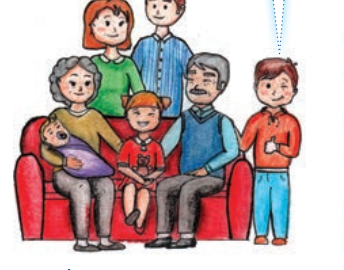
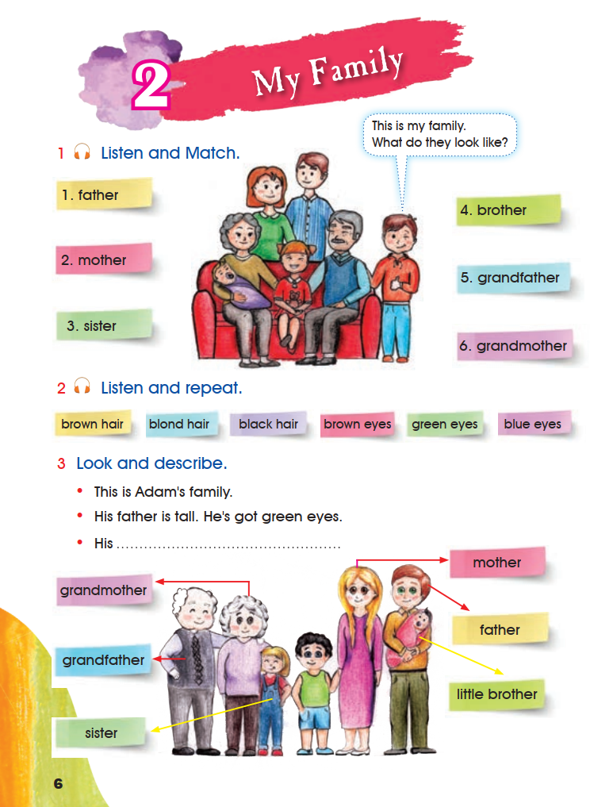
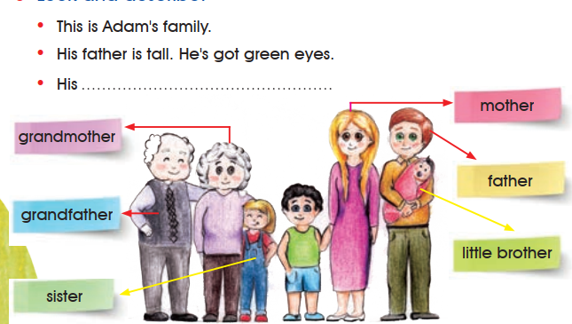
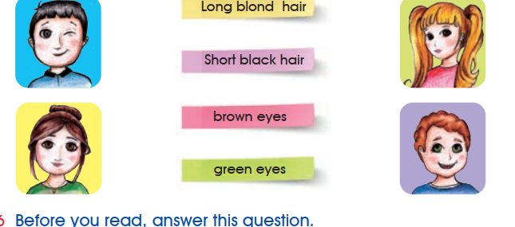
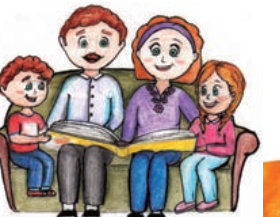
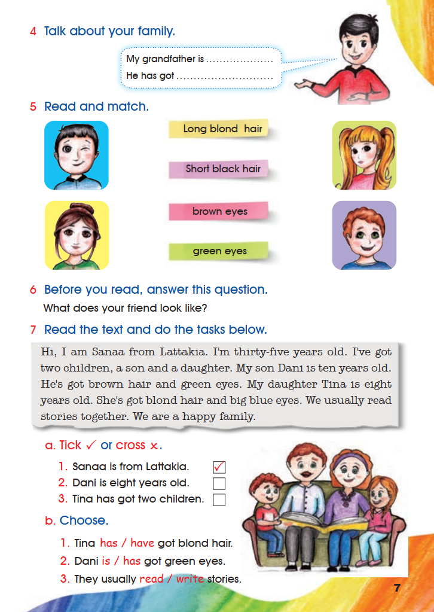
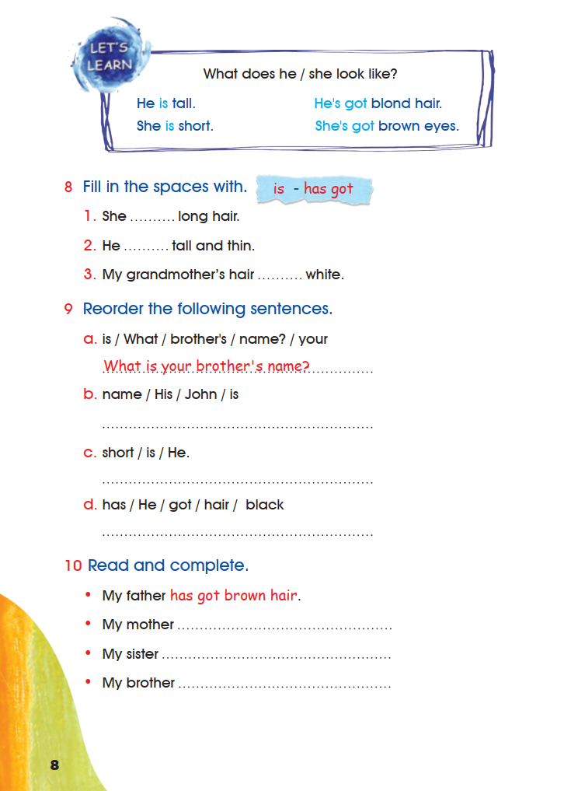

Pupil’s Book
Pupil’s Book · My Family · pages 6–8
Activities 1–10 appear in their original order. The textbook wording is transcribed from the three supplied pages; teaching notes and listening notes are kept separate from that wording.
1. Listen and Match.
- 1. father
- 2. mother
- 3. sister
- 4. brother
- 5. grandfather
- 6. grandmother

This is my family.
What do they look like?
The two sentences above are printed in a speech bubble next to the boy in the picture. The book does not print a written response for this listening activity, so the boxes below are for your own matching notes only.
Open the source page · Pupil’s Book · p. 6
This is the original supplied image, shown without redrawing or generation.

2. Listen and repeat.
- brown hair
- blond hair
- black hair
- brown eyes
- green eyes
- blue eyes
3. Look and describe.
- This is Adam’s family.
- His father is tall. He’s got green eyes.
- His .

The third bullet is printed with a dotted line after the word “His”, so it is a sentence for the learner to complete. The book prints no completed version of it, so no answer is supplied here.
4. Talk about your family.
My grandfather is .
He has got .
Speaking activity. Use your own family in the two frames; nothing is scored.
5. Read and match.

6. Before you read, answer this question.
What does your friend look like?
7. Read the text and do the tasks below.
Hi, I am Sanaa from Lattakia. I’m thirty-five years old. I’ve got two children, a son and a daughter. My son Dani is ten years old. He’s got brown hair and green eyes. My daughter Tina is eight years old. She’s got blond hair and big blue eyes. We usually read stories together. We are a happy family.

a. Tick ✓ or cross ×.
1. Sanaa is from Lattakia. ✓ printed in the source
2. Dani is eight years old.
3. Tina has got two children.
1. ✓ — the text says “I am Sanaa from Lattakia.” (already printed in the book).
2. × — the text says Dani is ten years old.
3. × — the text says Sanaa has got two children; Tina is her eight-year-old daughter.
b. Choose.
1. Tina has / have got blond hair.
2. Dani is / has got green eyes.
3. They usually read / write stories.
1. has · 2. has · 3. read
Open the source page · Pupil’s Book · p. 7
This is the original supplied image, shown without redrawing or generation.

Let’s Learn
What does he / she look like?
He is tall. She is short.
He’s got blond hair. She’s got brown eyes.
The printed box is kept word for word: short answers with is describe the whole person, and has got is used for hair and eyes.
8. Fill in the spaces with.
is – has got
9. Reorder the following sentences.
10. Read and complete.
My father has got brown hair. printed in red in the book as the example
Personal writing. Answers depend on your own family, so no answer is supplied.
Open the source page · Pupil’s Book · p. 8
This is the original supplied image, shown without redrawing or generation.
